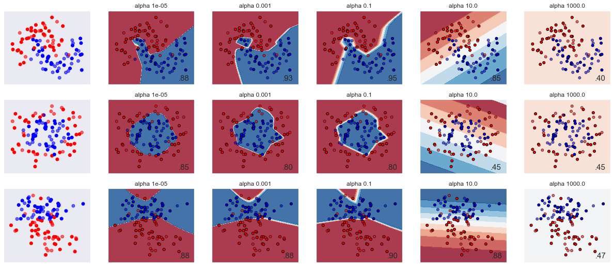

Perceptron
- Varying regularization in Multi-layer Perceptron (Source)
A comparison of different values for regularization parameter 'alpha' on synthetic datasets. The plot shows that different alphas yield different decision functions. Alpha is a parameter for regularization term, aka penalty term, that combats overfitting by constraining the size of the weights. Increasing alpha may fix high variance (a sign of overfitting) by encouraging smaller weights, resulting in a decision boundary plot that appears with lesser curvatures. Similarly, decreasing alpha may fix high bias (a sign of underfitting) by encouraging larger weights, potentially resulting in a more complicated decision boundary.
Author: Issam H. Laradji
License: BSD 3 clause
import numpy as np from matplotlib import pyplot as plt from matplotlib.colors import ListedColormap from sklearn.model_selection import train_test_split from sklearn.preprocessing import StandardScaler from sklearn.datasets import make_moons, make_circles, make_classification from sklearn.neural_network import MLPClassifier from sklearn.pipeline import make_pipeline h = .02 # step size in the mesh alphas = np.logspace(-5, 3, 5) names = ['alpha ' + str(i) for i in alphas] classifiers = [] for i in alphas: classifiers.append(make_pipeline( StandardScaler(), MLPClassifier(solver='lbfgs', alpha=i, random_state=1, max_iter=2000, early_stopping=True, hidden_layer_sizes=[100, 100]) )) X, y = make_classification(n_features=2, n_redundant=0, n_informative=2, random_state=0, n_clusters_per_class=1) rng = np.random.RandomState(2) X += 2 * rng.uniform(size=X.shape) linearly_separable = (X, y) datasets = [make_moons(noise=0.3, random_state=0), make_circles(noise=0.2, factor=0.5, random_state=1), linearly_separable] figure = plt.figure(figsize=(17, 9)) i = 1 # iterate over datasets for X, y in datasets: # preprocess dataset, split into training and test part X = StandardScaler().fit_transform(X) X_train, X_test, y_train, y_test = train_test_split(X, y, test_size=.4) x_min, x_max = X[:, 0].min() - .5, X[:, 0].max() + .5 y_min, y_max = X[:, 1].min() - .5, X[:, 1].max() + .5 xx, yy = np.meshgrid(np.arange(x_min, x_max, h), np.arange(y_min, y_max, h)) # just plot the dataset first cm = plt.cm.RdBu cm_bright = ListedColormap(['#FF0000', '#0000FF']) ax = plt.subplot(len(datasets), len(classifiers) + 1, i) # Plot the training points ax.scatter(X_train[:, 0], X_train[:, 1], c=y_train, cmap=cm_bright) # and testing points ax.scatter(X_test[:, 0], X_test[:, 1], c=y_test, cmap=cm_bright, alpha=0.6) ax.set_xlim(xx.min(), xx.max()) ax.set_ylim(yy.min(), yy.max()) ax.set_xticks(()) ax.set_yticks(()) i += 1 # iterate over classifiers for name, clf in zip(names, classifiers): ax = plt.subplot(len(datasets), len(classifiers) + 1, i) clf.fit(X_train, y_train) score = clf.score(X_test, y_test) # Plot the decision boundary. For that, we will assign a color to each # point in the mesh [x_min, x_max]x[y_min, y_max]. if hasattr(clf, "decision_function"): Z = clf.decision_function(np.c_[xx.ravel(), yy.ravel()]) else: Z = clf.predict_proba(np.c_[xx.ravel(), yy.ravel()])[:, 1] # Put the result into a color plot Z = Z.reshape(xx.shape) ax.contourf(xx, yy, Z, cmap=cm, alpha=.8) # Plot also the training points ax.scatter(X_train[:, 0], X_train[:, 1], c=y_train, cmap=cm_bright, edgecolors='black', s=25) # and testing points ax.scatter(X_test[:, 0], X_test[:, 1], c=y_test, cmap=cm_bright, alpha=0.6, edgecolors='black', s=25) ax.set_xlim(xx.min(), xx.max()) ax.set_ylim(yy.min(), yy.max()) ax.set_xticks(()) ax.set_yticks(()) ax.set_title(name) ax.text(xx.max() - .3, yy.min() + .3, ('%.2f' % score).lstrip('0'), size=15, horizontalalignment='right') i += 1 figure.subplots_adjust(left=.02, right=.98) plt.show()
